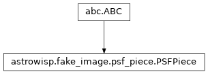

astrowisp.fake_image.psf_piece module
Class Inheritance Diagram

Define the base class for pieces of piecewise PSFs.
- class astrowisp.fake_image.psf_piece.PSFPiece[source]
Bases:
ABC
Declare a minimum interface for pieces of PiecewisePSF.
- abstract integrate(left, bottom, width, height)[source]
Evaluate the integral of the cell function over a rectangle.
- Parameters:
left – The x-coordinate of the left boundary of the rectangle to integrate over.
bottom – The y-coordinate of the bottom boundary of the rectangle to integrate over.
width – The x-size of the rectangle to integrate over.
height – The y-size of the rectangle to integrate over.
- Returns:
The integral of the bi-cubic polynomial function defining this piece of the PSF over the specified rectangle, with no consideration of whether the rectangle fits within the piece.
- Return type: